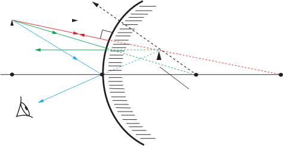

that the angle of incidence equals the angle of reflection.
4. Any incident ray travelling toward a convex mirror such that its extension passes through the centre of curvature will be reflected along its path.

Activity 4.9 Aids in understanding characteristics of image formed by convex mirrors.

Activity 4.9
Aim:
To determine the images formed by a convex mirrorMaterials:
graph paper, a sharp pencil, a rulerProcedure
1. Choose an appropriate scale so that the ray diagram fits on the available space, and draw a convex mirror at the centre of the graph paper.
2. Draw a horizontal line passing through the centre of the convex mirror. This is the principal axis. Locate the centre of curvature, C and the focal point, F on the principal axis such that there is a considerable distance between C and P.
3. Use the scale to draw an upright arrow at a point far from the mirror. The arrow represents an object at a position far from the mirror.
4. Draw a ray from the tip point of the arrow towards the focal point, which is on the opposite side of the mirror. This ray will strike the mirror before reaching the focal point; stop the ray at the point of incidence with the mirror.
5. Draw the second ray such that it travels exactly parallel to the principal axis. Remember to place arrowheads upon the rays to indicate their direction.
6. Once the incident rays strike the mirror, they are reflected according to the rules of reflection for convex mirrors. For example, the ray that travels towards the focal point will be reflected and travel parallel to the principal axis. The incident ray that travels parallel to the principal axis is reflected and travels in a direction such that the reflected ray, extended backwards, passes through the focal point.